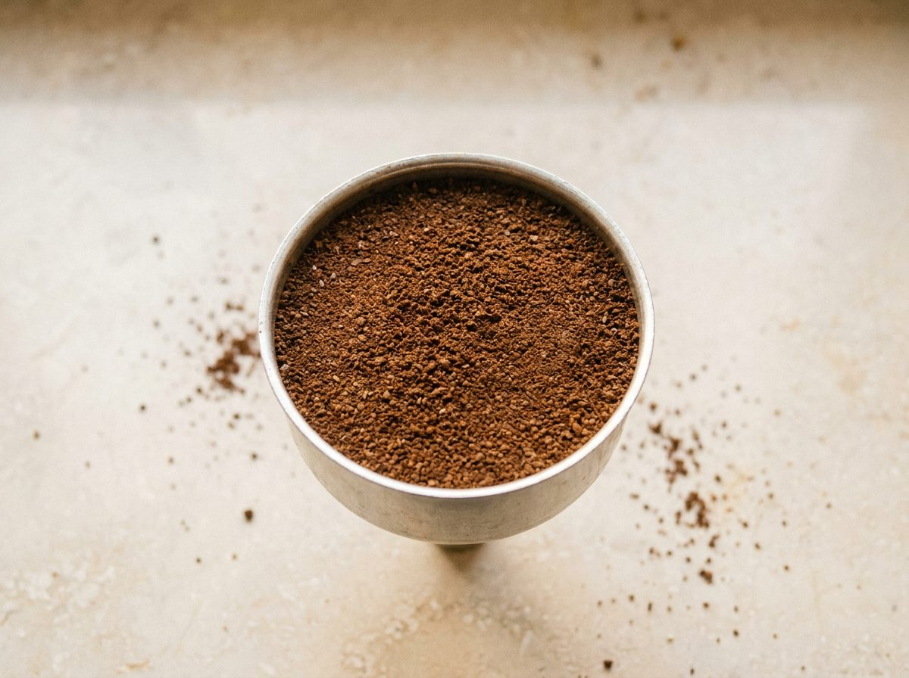
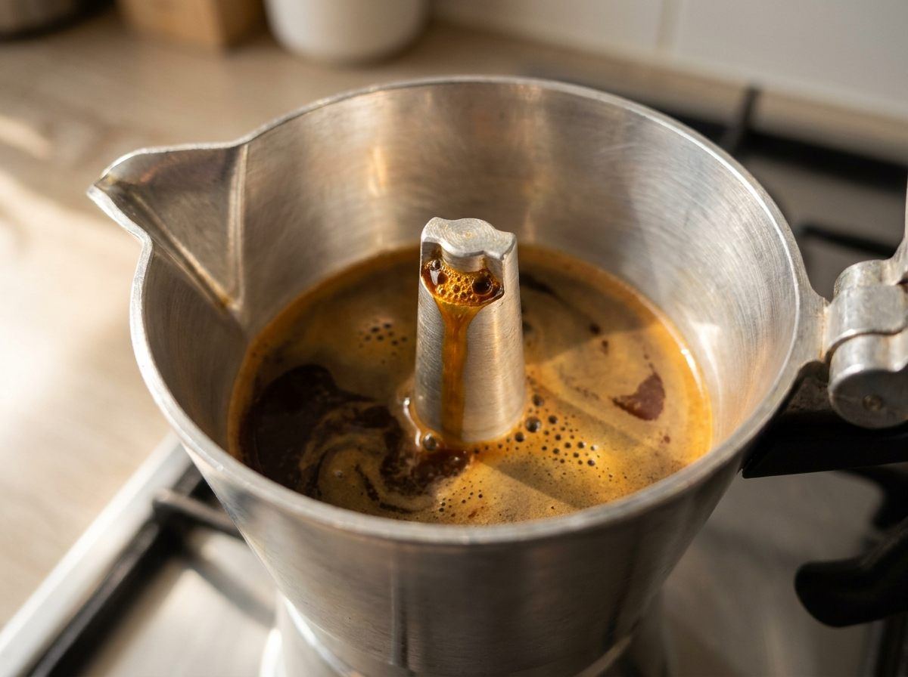
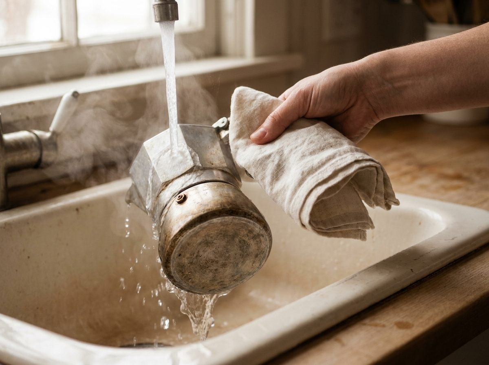

Inicio / Journal / Cómo hacer café en cafetera italiana (moka) sin que sepa a quemado
Guías y métodos
Cómo hacer café en cafetera italiana (moka) sin que sepa a quemado
La cafetera italiana está en casi todas las casas de España. Y casi siempre se usa igual: agua fría, fuego fuerte y esperar a que ruja. Con tres cambios pequeños, el mismo café sabe mucho mejor.

Paso a paso
Calienta el agua aparte. Llena la base hasta justo debajo de la válvula, nunca por encima. Así el café pasa menos tiempo al fuego y no se recuece.
Llena el filtro con café molido para moka, a ras. Nivélalo con el dedo, sin apretar, y limpia el borde.

Enrosca la cafetera con un paño: la base está caliente. Ciérrala firme.
Ponla a fuego medio-bajo con la tapa abierta. El café debe salir despacio, como un hilo de miel.

Cuando el chorro se aclare y empiece a burbujear, retírala del fuego.
Enfría la base unos segundos bajo el grifo. Así se para la extracción y el final no amarga. Remueve el café de la cafetera y sirve.

¿Qué molienda necesita?
Más fina que para filtro y más gruesa que para espresso. Si compras el café molido, pide «molido para moka».
Si usas molienda de espresso, el agua pasa con dificultad y el café sale amargo. Si usas molienda gruesa, sale aguado.
¿Te sale amargo o aguado? Encuentra la causa
Toca lo que notas en la taza.
Elige una opción para ver la causa y qué probar.
Causa probable
Fuego demasiado fuerte o la dejaste al fuego hasta el final, cuando ya «ruge».
Prueba esto
- Empieza con agua ya caliente.
- Fuego medio-bajo y tapa abierta.
- Retírala cuando el chorro se aclare y enfría la base con agua fría.
- Si sigue amargo, pide una molienda un poco más gruesa.
Causa probable
Poco café en el filtro o una molienda demasiado gruesa.
Prueba esto
- Llena el filtro a ras, sin dejar hueco.
- Usa café molido para moka, no para filtro ni para prensa.
- El agua, solo hasta justo debajo de la válvula.
Causa probable
El agua pasa demasiado rápido y no saca todo el sabor.
Prueba esto
- Pide una molienda un poco más fina, sin llegar a la de espresso.
- Empieza con agua caliente para que el café no se cueza a medias.
Causa probable
Fuego demasiado alto o molienda gruesa.
Prueba esto
- Baja el fuego: el café debe salir como un hilo de miel.
- Usa molienda para moka.
Causa probable
Café apretado, molienda demasiado fina o el filtro obstruido.
Prueba esto
- No aprietes nunca el café: solo nivélalo.
- Evita la molienda de espresso en la moka.
- Limpia el filtro y la placa con agua caliente.
Seguridad: si no sale nada, apaga el fuego y espera a que se enfríe antes de abrirla.
Causa probable
Restos de café en el borde, la rosca mal cerrada o la junta de goma gastada.
Prueba esto
- Limpia el borde del filtro antes de cerrar.
- Enrosca firme, con un paño.
- Cambia la junta si está dura o agrietada.
Cinco errores que estropean el café
- Apretar el café en el filtro.
- Llenar la base por encima de la válvula.
- Fuego fuerte para acabar antes.
- Dejarla al fuego hasta que «ruge».
- Recalentar el café que sobra.
¿Sirve en placa de inducción?
Solo si la base es de acero apto para inducción. Las de aluminio necesitan un adaptador para inducción.
Limpieza y cuidado
- Aclárala con agua caliente después de cada uso.
- Si es de aluminio, mejor a mano y sin lavavajillas.
- Sécala por piezas y guárdala abierta.
- Cambia la junta de goma cuando esté dura o agrietada.
Preguntas
Preguntas frecuentes
¿Otra duda? Escríbenos →01¿Cuánto café se pone en una cafetera italiana?
El filtro marca la medida: llénalo a ras, sin apretar. Cada tamaño de cafetera tiene su filtro.
02¿Se aprieta el café en la cafetera italiana?
No. Solo se nivela. Si lo aprietas, el agua pasa con dificultad y el café sale amargo.
03¿Por qué mi café de cafetera italiana sabe a quemado?
Casi siempre por fuego fuerte o por dejarla al fuego hasta el final. Retírala antes y enfría la base con agua fría.
04¿Qué molienda necesita la cafetera italiana?
Una molienda media-fina: más fina que para filtro y más gruesa que para espresso. Pide «molido para moka».
05¿La cafetera italiana hace espresso?
No. Trabaja con mucha menos presión que una máquina de espresso. Da un café intenso, pero distinto.